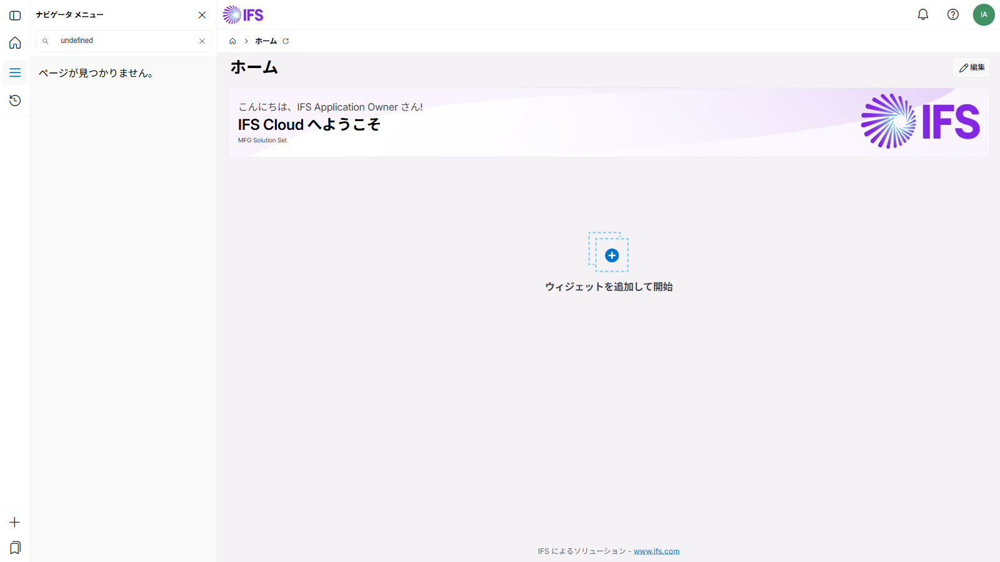

テスト概要
| テスト方式 | IFS Cloud 実機テスト（AI エージェントによる自動実行） |
| テスト環境 | pwojaqu-dev1.build.ifs.cloud / IFS Cloud 25R2 |
| テスト対象 | クイックレポート ID: 2000001 |
| 総合判定 | ✓ 合格（7 / 7 件 OK） |
テスト結果一覧
| No. | テスト観点 | 確認内容 | 期待結果 | 実績 | 判定 |
|---|---|---|---|---|---|
| 1 | SQL 構文検証 | validate_sql ツールで SQL が正常に実行される | valid: true / 9件取得 | valid: true / rowCount: 9 | ✓ OK |
| 2 | ステータスフィルタ | OBJSTATE = 'Released' のみ抽出される | 'Closed'（ORDER_NO=2）は除外 | Released 9件のみ表示。ORDER_NO=2（Closed）は除外確認 | ✓ OK |
| 3 | 仕入先名結合 | SUPPLIER_INFO との結合で仕入先名が表示される | "MF–External Supplier 1" が表示 | 全9件で仕入先名 "MF–External Supplier 1" 取得確認 | ✓ OK |
| 4 | 遅延フラグ | PLANNED_RECEIPT_DATE < SYSDATE の行が '遅延' になる | 全9件が過去日のため '遅延' | 全9件の遅延フラグ = '遅延' 確認 | ✓ OK |
| 5 | ソート順 | 入庫予定日昇順で並ぶ | 2026-04-28 → 2026-05-18 の順 | JP-PO-005〜009 (04-28) が先頭、MPSIM-ORD3 (05-18) が後続 | ✓ OK |
| 6 | QR 作成・登録 | IFS Cloud に正式登録される | QuickReportId = 2000001 で登録 | API 確認: QuickReportId=2000001、Description 正常登録 | ✓ OK |
| 7 | 画面表示 | IFS Cloud 実画面で9件が表示される | クイックレポート画面でデータ表示 | /web/quickreport/2000001 アクセスで9件表示確認 | ✓ OK |
画面エビデンス
① IFS Cloud ホーム画面（ログイン確認）

ユーザー IFSAPP で IFS Cloud 25R2 にログイン完了
② クイックレポート実行画面（9件表示確認）

URL: /main/ifsapplications/web/quickreport/2000001 — 発注残9件が入庫予定日昇順で表示
取得データ（実績値）
| 購買オーダ番号 | 明細番号 | 品目番号 | 仕入先名 | 発注数量 | 入庫予定日 | 遅延フラグ |
|---|---|---|---|---|---|---|
| JP-PO-005 | 1 | MF-MRPTOP1-MRPPR1 | MF–External Supplier 1 | 10 | 2026-04-28 | 遅延 |
| JP-PO-006 | 1 | MF-MRPTOP1-MRPPR1 | MF–External Supplier 1 | 10 | 2026-04-28 | 遅延 |
| JP-PO-007 | 1 | MF-MRPTOP1-MRPPR1 | MF–External Supplier 1 | 10 | 2026-04-28 | 遅延 |
| JP-PO-008 | 1 | MF-MRPTOP1-MRPPR1 | MF–External Supplier 1 | 10 | 2026-04-28 | 遅延 |
| JP-PO-009 | 1 | MF-MRPTOP1-MRPPR1 | MF–External Supplier 1 | 10 | 2026-04-28 | 遅延 |
| MPSIM-ORD3 | 1 | MF-MRPTOP1-MSPR1 | MF–External Supplier 1 | 5 | 2026-05-18 | 遅延 |
| MPSIM-ORD3 | 2 | MF-MRPTOP1-MRPPR1 | MF–External Supplier 1 | 5 | 2026-05-18 | 遅延 |
| MPSIM-ORD3 | 3 | MF-MSTOP1-MSPR1 | MF–External Supplier 1 | 5 | 2026-05-18 | 遅延 |
| MPSIM-ORD3 | 4 | MF-MSTOP1-MRPPR1 | MF–External Supplier 1 | 5 | 2026-05-18 | 遅延 |